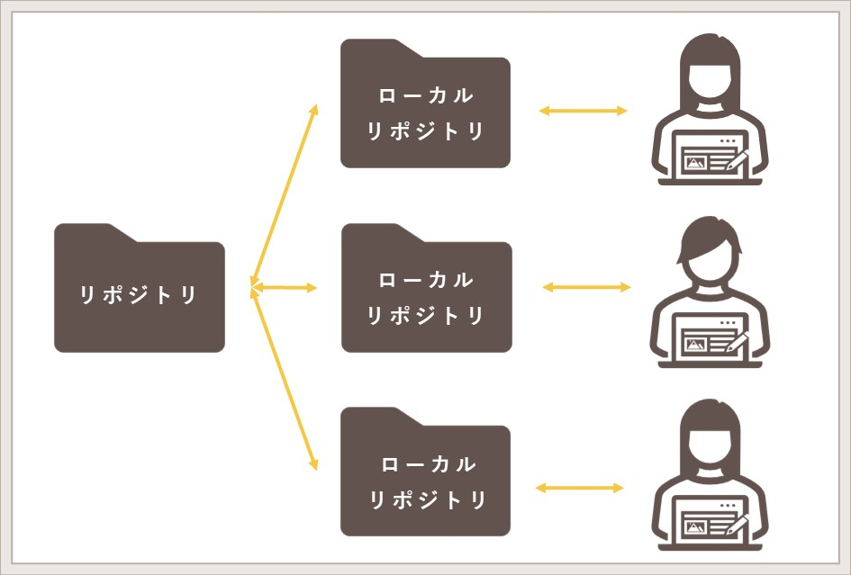

第１回
gitに関して
gitとは？
gitは、プログラムのソースコードなどの変更履歴を記録・追跡するための「分散型バージョン管理システム」である。
gitの特徴
gitの最大の特徴は、「分散型」と言われるとおり、自分のパソコンに全ての変更履歴を含む完全なフォルダの複製を作成できるということ。
つまり、元フォルダのコピー（ローカルリポジトリ）を手元に置いておけて、自由に編集できるということである。

※リポジトリとは、ファイルや変更履歴を保存しておくデータベース。
gitでできること
- 古いバージョンから新しいバージョンのファイルまで一元的に管理できる
- 簡単に古いバージョンに戻せる
- チームでファイルや変更履歴をスムーズに共有できる
- 豊富な機能を使いチームでの共同開発を効率化できる
参考文献
【入門】Gitとは？できることや使い方、GitHubとの違いをわかりやすく解説
【絶対理解できる】Gitとは？特徴やできることまとめ！
htmlに関して
htmlとは？
htmlとは、「Hyper Text Markup Language」の略称で、「さまざまなデータをWebブラウザが読み取れるようにタグ付けする言語」である。
htmlの役割は、Webページの内容を構造化することであり、文字や画像、動画、リンクといった要素をどのようにWebページ内に配置するかを記述する。
「メール文書の作成」「ホームページ作成」などをhtmlですることができる
htmlの「タグ」と「属性」
タグとは要素の始まりと終わりを定義するものである。<h1>のように文字列のみがあるものを開始タグ、</h1>のようにスラッシュと文字列があるものを終了タグという。
開始させたタグは、終了させないとエラーを起こすため注意が必要。
属性とはタグの中に追加で書く文字列で、タグに情報を追加する。
例えば、<a href>でリンクを貼るURLを記述したり、<img src>で挿入する画像についての情報を記載したりできる。
要素ごとに対応した属性があり、要素と属性を組み合わせることで、HTMLではあらゆる情報を表示できる。
参考文献
HTMLの書き方を初心者向けに徹底解説！ルールや基本を総まとめ
HTMLとは？できることやタグの種類、勉強方法もわかりやすく解説